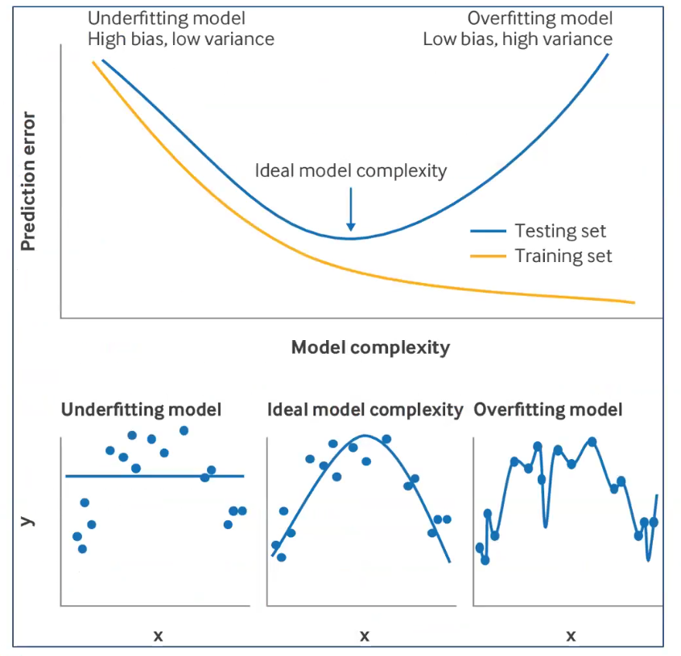

Modèles de prédiction clinique
Modèles de prédiction clinique
Utilité des facteurs pronostiques dans les modèles de prédiction clinique
Classification de la maladie au diagnostic
Prédiction de l’évolution de la maladie (risque absolu)
Informer la gestion clinique
Prévision individuelle plus précise du risque
Stratifier les patients dans les essais cliniques
Différents types de modèles de prédiction clinique
Modèles explicatifs : mettent en évidence les facteurs de risque et leur contribution à la maladie
Modèles prédictifs : se concentrent sur la précision de la prédiction, indépendamment de l’interprétabilité (pas de préoccupation au sujet de la causalité ou de la confusion)
Modèles descriptifs : résument les données sans nécessairement faire de prédictions
Dévelopmment d’un modèle de prédiction clinique : étape par étape
Définir les objectifs et rédiger un protocole détaillé
Choisir entre le développement d’un nouveau modèle ou la mise à jour d’un modèle existant
Spécifier le critère de jugement principal (outcome)
Lister les prédicteurs candidats et décrire leurs méthodes de mesure
Déterminer la taille d’échantillon nécessaire
Recueillir les données et vérifier leur qualité
Traiter les données manquantes (imputation, exclusions justifiées, etc.)
Ajuster les modèles de prédiction (développement ou mise à jour)
Évaluer la performance des modèles : discrimination, calibration, utilité clinique
Comparer les modèles et sélectionner la version finale
Effectuer une analyse de la courbe décisionnelle pour estimer l’impact clinique
Rédiger et publier les résultats (inclure, si pertinent, une analyse facultative de la contribution individuelle de chaque prédicteur)
Objectifs d’un modèle de prédiction clinique
Population cible : pour qui le modèle doit prévoir ?
Quel critère d’évaluation faut-il prévoir ?
Utilisateur : qui va utiliser le modèle ? (cliniciens, patients, systèmes de santé)
Décisions cliniques que le modèle doit informer (traitement, dépistage, suivi)
Choix entre développement d’un nouveau modèle ou mise à jour d’un modèle existant
Revue de la littérature pour identifier les modèles existants.
PROBAST : outil de validation critique pour évaluer la qualité méthodologique des modèles de prédiction existants (permet d’identifier les risques de biais et les problèmes de validité).
Risques de biais : par ex overfitting, sélection des prédicteurs, gestion des données manquantes, etc.
Applicabilité : évaluer si le modèle est pertinent pour la population cible, les prédicteurs disponibles, les critères d’évaluation, etc.
Pourquoi pas évaluer la validité d’un modèle existant dans la population cible avant de développer un nouveau modèle ?
Selon résultats de la validation, décider de développer un nouveau modèle ou de mettre à jour un modèle existant (ajout de nouveaux prédicteurs, recalibrage, etc.)
Définition d’un critère de jugement pour un modèle de prédiction clinique
Réponse binaire si temps bref ou simultanéité (ex. présence d’une maladie)
Réponse quantitative si état fonctionnel, qualité de vie, taille tumeur…
Etc etc
Détermination des prédicteurs possibles et préciser les méthodes de mesure pour un modèle de prédiction clinique
Prédicteurs : idéalement définis et mesurés objectivement, de manière fiable et reproductible, et disponibles au moment de la prise de décision clinique.
Dichotomosation / catégorisation des prédicteurs continus réduit l’information et la puissance statistique
Taille d’échantillon nécessaire pour développer un modèle de prédiction clinique
Règle empirique : au moins 10 événements par prédicteur (EPV) pour les modèles de régression logistique (ex. 100 événements pour 10 prédicteurs)
4 critères :
Estimation de l’incidence
Estimation des prédictions individuelles
Pas trop de sur-ajustement (overfitting) (a posteriori ou lors de la modélisation (lasso, ridge, etc.))
Corriger le sur-ajustement de manière un peu systématique
Référence : Riley et al. (2020) “Calculating the sample size required for developing a clinical prediction model” BMJ 368:m441. https://doi.org/10.1136/bmj.m441 Riley et al. (2020)
Recueil des données et vérification de leur qualité pour un modèle de prédiction clinique
Idéal = cohorte prospective avec collecte de données standardisée
Mais difficiles à mettre en place, coûteuses, longues
Erreurs de données : essayer de standardiser
Exploration des données : prédicteur avec faible variabilité dans le jeu de données ? Mutation avec fréquence faible ? Prédicteur avec beaucoup de données manquantes ? Etc.
Modèles de prédiction : Adaptation des modèles
Si taille grande : termes non linéaires (eg splines), interactions
- splines : permettent de modéliser des relations non linéaires entre les prédicteurs continus et l’outcome sans imposer une forme fonctionnelle spécifique (ex. linéaire). Ils divisent la plage des prédicteurs en segments et ajustent des fonctions polynomiales dans chaque segment, assurant une transition fluide entre eux.
Modèles IA / machine learning : random forest, gradient boosting, réseaux de neurones, etc.
Mais première étape : pénalisation de modèles (avant de passer à des modèles plus complexes) : lasso, ridge, elastic net, etc.
Dans tous les cas : vérifier les hypothèses des modèles :
Modèle linéaire général :
Indépendance des résidus
Homoscédasticité (variance constante des résidus)
Normalité des résidus
Linéaritié (pour les prédicteurs continus)
Additivité = absence d’interactions (sauf si spécifiées)
Survie : proportionalité des risques (Cox), etc.
Modèles de prédiction clinique : Étude de l’adéquation du modèle
Processus diagnostique ou utilisation des résidus pour évaluer les hypothèses du modèle :
Résidus vs prédictions ajustées
Résidus vs prédicteurs (résidus = écarts entre valeurs observées et valeurs prédites en fonction de chaque prédicteur)
Q-Q plot des résidus
Modèles de prédiction clinique : transformation des variables
Le fait d’exprimer au mieux la relation avec la réponse nécessite parfois une transformation
Ou pour respecter les conditions du modèle
Recherche du seuil optimal, de segmentation (arbre de régression)
Splines / polynomes : modèles de régression locale pour interaction complexe entre deux variables
Modèles de prédictions cliniques : AIC et BIC
2 façons de “fit” des modèles différentes
Aikake Information Criteria (AIC)
calculée à partir de la vraisemblance du modèle et du nombre de paramètres qu’il utilise
Pénalise les modèles plus complexes (avec plus de paramètres) pour éviter le sur-ajustement (overfitting)
Le modèle avec le plus petit AIC est considéré comme le meilleur compromis entre la qualité de l’ajustement et la simplicité du modèle
Bayesian Information Criterion (BIC)
Tient compte du nombre d’observations dans le calcul de la pénalisation, ce qui peut conduire à une préférence pour des modèles plus simples lorsque la taille de l’échantillon est grande
Très proche de l’AIC, mais pénalise davantage les modèles avec plus de paramètres (plus strict que l’AIC)
Le modèle avec le plus petit BIC est considéré comme le meilleur compromis entre la qualité de l’ajustement et la simplicité du modèle, mais avec une pénalisation plus forte pour les modèles complexes que l’AIC
Modèles de prédiction clinique : conséquences d’erreur de sélection de prédicteurs
Fausse inclusion d’une variable prédictive
Fausse exclusion d’une variable prédictive
Dans les deux cas : problème d’estimation de la variance des prédictions (RMSE)
Et si variable importante : biais dans la prédiction, donc biais dans la prédiction
Modèles de prédiction clinique : différents procédés de sélection des variables
Procédures pas à pas (stepwise) :
Ascendante : forward ou bottom-up
Descendante : backward ou top-down
On peut utiliser des critères comme AIC ou BIC pour choix
Mais biais ++ !! car pas de test pour l’incertitude dans le processus de sélection des variables
\(R^2\) (RMSE) tiré vers le haut car les variables sont sélectionnées pour maximiser la performance du modèle sur les données d’entraînement, ce qui peut conduire à un sur-ajustement (overfitting) et à une performance surestimée du modèle sur ces données
Tests statistiques non conformes car les tests sont effectués sur un modèle sélectionné à partir des données d’entraînement, ce qui introduit un biais dans les tests statistiques
variance des coefficients biaisées vers le bas (IC bas)
degré de significativité trop bas, car comparaisons multiples
sélection dépend de la colinéarité des variables incluses
NB : dans un modèle, RMSE correspond à la somme de la variance des prédictions (imprécision) et du biais (erreur systématique).
Si R2 est tiré vers le haut, ça veut dire que le modèle est “suroptimiste” : il prédit mieux les données d’entraînement que les données de test (ou de validation)
Modèle complet
Chaque variable est incluse dans le modèle, indépendamment de sa significativité statistique
Une variable hautement corrélée avec la réponse peut avoir une contribution négligeable car son effet est déjà capturé par d’autres variables incluses dans le modèle
Modèle “expert” : sélection basée sur la littérature, l’expertise clinique, etc.
Modèle hiérarchique :
groupement “naturel” de variables par domaine,
puis sélection dans chaque domaine,
puis sélection finale à partir des variables retenues dans chaque domaine
Modèles de prédiction clinique : définition et conséquences de la multicolinéarité
1 prédicteur peut être prédit à partir des autres
Lorsque les prédicteurs sont fortement corrélés entre eux, il peut être difficile de déterminer l’effet individuel de chaque prédicteur sur la variable de réponse, ce qui peut entraîner des coefficients instables et difficiles à interpréter dans les modèles de régression.
La multicolinéarité peut également conduire à des erreurs d’estimation des coefficients, à une augmentation de la variance des prédictions (RMSE) et à une diminution de la significativité statistique des prédicteurs, rendant ainsi le modèle moins fiable pour la prise de décision clinique.
Variance Inflation Factor :
quantifie la multicolinéarité en passant par une régression du facteur en question sur les autres,
indique dans quelle mesure la variance d’un coefficient de régression est augmentée en raison de la corrélation avec les autres prédicteurs.
Un VIF élevé (généralement > 5 ou 10) suggère une multicolinéarité problématique, ce qui peut rendre les coefficients de régression instables et difficiles à interpréter.
Modèles de prédiction clinique : parcimonie vs performance
Modèle parcimonieux : modèle qui utilise le moins de prédicteurs possible, au risque d’être “underfitting”
Modèle performant : modèle qui maximise la performance (ex. R2, RMSE, etc.) sans nécessairement se soucier du nombre de prédicteurs utilisés
Il existe souvent un compromis entre parcimonie et performance : un modèle plus simple peut être plus facile à interpréter et à utiliser en clinique, mais peut avoir une performance légèrement inférieure à un modèle plus complexe. Inversement, un modèle plus complexe peut offrir une meilleure performance, mais peut être plus difficile à interpréter et à appliquer en pratique clinique.
Plus on ajuste le modèle sur les données d’entraînement, plus le risque est de s’éloigner des données de test.
Ajuster = dépenser des degrés de liberté

Modèle de prédiction clinique : éviter le surajustement
Principe général de parcimonie (Occam) : préférer le modèle le plus simple qui explique les données
Principes de réduction :
Éliminer les variables non retrouvées dans la littérature
Éliminer variables de distribution trop proches ou avec fortes proportion de données manquantes
Méthodes pour limiter le surajustement :
réduction de dimension / sélection de variables : composantes principales, partial least squares (PLS), LASSO (Least Absolute Shrinkage and Selection Operator), etc.
shrinkage/pénalisation des coefficients : régression ridge, elastic net, lasso, etc.
Modèles de prédiction clinique : décomposition biais-variance de l’erreur de prédiction
L’erreur de prédiction (RMSE) peut être décomposée en deux composantes : le biais et la variance.
Biais = écart au carré entre l’espérance de la prédiction et la vraie valeur. Correspond à l’erreur systématique (au carré) dans les prédictions du modèle, c’est-à-dire la différence entre les prédictions moyennes du modèle et les valeurs réelles de la variable de réponse. Un modèle avec un biais élevé a tendance à faire des prédictions qui sont systématiquement éloignées des valeurs réelles.
Variance = dispersion de la prédiction autour de sa propre espérance. Correspond à la variabilité des prédictions du modèle pour différents échantillons de données d’entraînement. Un modèle avec une variance élevée a tendance à faire des prédictions qui varient considérablement en fonction des données d’entraînement utilisées, ce qui peut conduire à un sur-ajustement (overfitting) et à une performance médiocre sur les données de test.
NB : ici, espérance = valeur moyenne théorique de la prédiction quand on répète le même processus d’apprentissage plusieurs fois.
Concrètement : on imagine ré-échantillonner les données d’entraînement (ou répéter l’étude), ré-ajuster le modèle à chaque fois, puis calculer la prédiction pour un même patient/profil \(x\).
L’espérance \(\\mathbb{E}[\\hat{y}(x)]\) est alors la moyenne des prédictions \(\\hat{y}(x)\) obtenues sur ces répétitions (source d’aléa = choix de l’échantillon et, selon le contexte, le bruit de mesure).
Modèles de prédiction clinique : shrinkage (rétrécissement des coefficients)
Définition : le shrinkage factor \(S\) (souvent \(0 < S \\le 1\)) sert à réduire l’amplitude des coefficients d’un modèle.
Problème visé : en cas de surajustement (trop de degrés de liberté pour une taille d’échantillon limitée), les coefficients sont souvent surestimés, ce qui produit des prédictions trop extrêmes et trop optimistes sur de nouvelles données (typique : calibration slope < 1).
Principe : appliquer une réduction globale des coefficients (en général hors intercept) :
\(\\beta^{\\*} = S\\,\\hat{\\beta}\)
Effet : les prédictions se rapprochent de la moyenne (moins extrêmes), donc en général une calibration plus réaliste.
Comment obtenir \(S\) ? (réduction a posteriori) : estimer l’optimisme par validation interne (souvent bootstrap), puis utiliser une estimation du calibration slope corrigé de l’optimisme comme facteur de shrinkage global.
Exemple : si \(S = 0{,}9\), alors on multiplie chaque \(\\hat{\\beta}\) (hors intercept) par \(0{,}9\) : on « retire » ~10% à tous les effets.
Modèles de prédiction clinique : Pénalisation
Régression ridge
Objectif : réduire la variance des coefficients de régression en ajoutant une pénalité à la somme des carrés des coefficients
Pénalité : la pénalité est proportionnelle au carré des coefficients
Effet : réduit la magnitude des coefficients mais ne les annule pas
Régression LASSO
Objectif : Sélectionner les variables les plus importantes en ajoutant une pénalité à la somme des valeurs absolues des coefficients
Pénalité : la pénalité est proportionnelle à la valeur absolue des coefficients
Effet : peut annuler certains coefficients, effectuant une sélection des variables
Elastic net :
- Combine Ridge et Lasso
Modèle de prédiction clinique : stabilité des prédicteurs
La sélection des variables introduit généralement une incertitude supplémentaire
Instabilité de la sélection
Variance supplémentaire des coefficients de régression
Quantifier cette incertitude en utilisant des études de stabilité par ré-échantillonnage
Répéter l’algorithme de sélection dans les sous-échantillons
Attention : prédicteurs corrélés peuvent “jouer à cache-cache”
Article : Table 2 de Heinze Biom J 2018 donne description de la sélection des variables et critères d’arrêt
Modèle de prédiction clinique : “Machine Learning”
Sur revue systématique : pas de performance de bénéfice par rapport aux régressions classiques
(Si articles classés en fonction de leur risque de biais)
Modèle de prédiction clinique : traitement des données manquantes
- Imputation multiple des prédicteurs